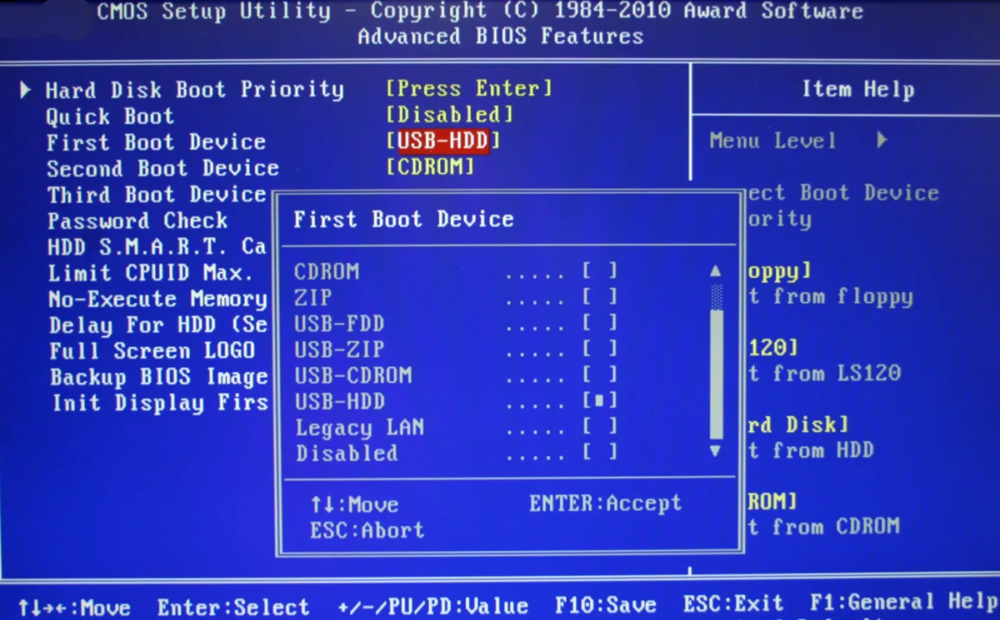
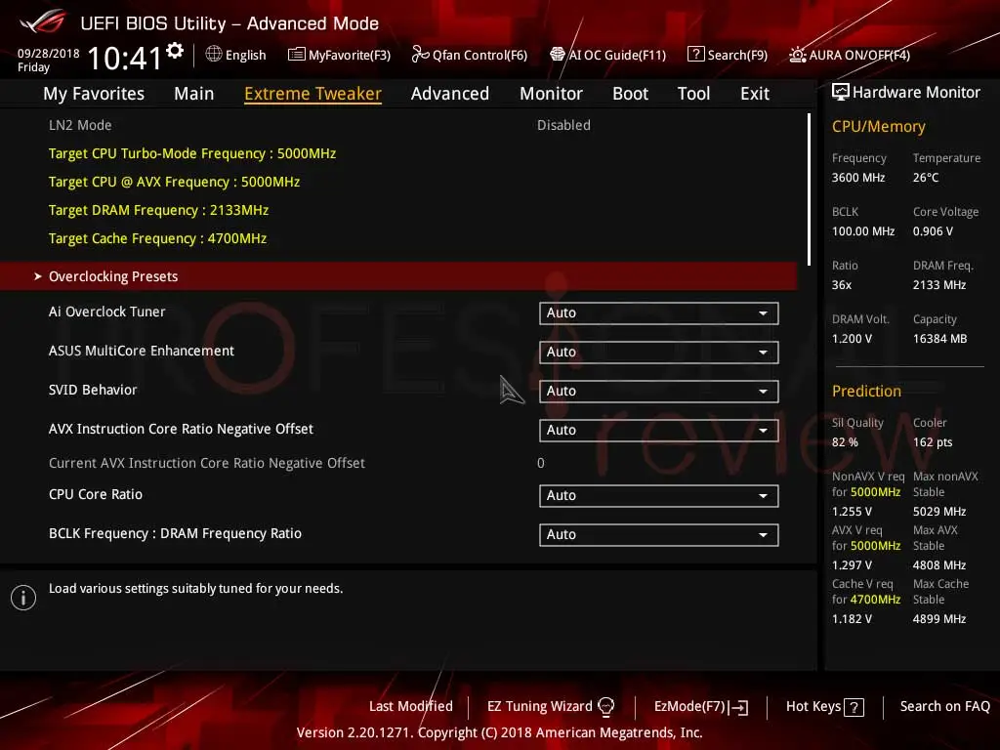

Conceptos clave de la BIOS
-
POST: Power-On Self Test
Una de las funciones que realiza la BIOS es el POST es una serie de diagnóstico que sirven verificar que el hardware del ordenador esté funcionando correctamente antes de cargar el sistema operativo.
Este proceso verifica los componentes de entrada y salida, y se encarga de configurar y diagnosticar el estado del hardware. Si en este proceso algo falla, el ordenador no se encenderá dando un error.
Generalmente este proceso no es visible en la mayoría de arranques, pero puede ser activado para detectar posibles errores. -
Configuración de la BIOS
Para configurar la BIOS depende del ordenador habrá que usar unas teclas u otras al encender el ordenador. Esto nos llevara a una interfaz, que actualmente es la UEFI, un nuevo sistema que tiene algunas diferencias con la BIOS pero que desempeña un trabajo parecido. Entre otras cosas, se puede configurar la fecha y hora del sistema, el orden de arranque, las opciones de seguridad, etc.
-
Orden de arranque
El orden de arranque es una opción configurable de la BIOS y determina el orden en que se controlan los dispositivos desde los que se inicia el equipo, es decir, un disco duro, un USB, un disco óptico...
El orden predeterminado de UEFI es:- Administrador de arranque del sistema operativo
- Unidad USB
- Unidad USB CD o DVD
- Adaptador de red
-
Legacy
UEFI
